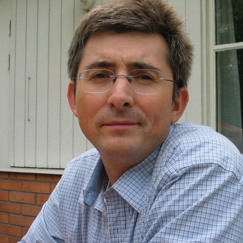

Program
| June 16 (Sunday) |
June 17 (Monday) |
June 18 (Tuesday) |
June 19 (Wednesday) |
|
|---|---|---|---|---|
| 9:00-10:00 | TTK Hackathon | Keynote | Overview talk 1 | Overview talk 2 |
| 10:00-10:30 | Coffee break | |||
| 10:30-12:30 | Paper Session 1 | Paper Session 4 | Paper Session 6 | |
| TTK Hackathon summary | Closing | |||
| 12:30-13:30 | Lunch | |||
| 13:30-15:15 | Paper Session 2 | Paper Session 5 | ||
| Panel discussion | ||||
| 15:15-15:30 | Coffee break | Excursion and dinner |
||
| 15:30-17:00 | Paper Session 3 | |||
| 17:00-19:00 | ||||
| 19:00-20:00 | Dinner | |||
Keynote Talk
Date and time: June 17, 9:00am
Speaker: Wojciech Chachólski (KTH, Stockholm)
Title: How to give a machine a sense of geometry?
Abstract: There are two aspects of what a sense is: technical tool and ability to learn to use it. This learning ability is essential. For example we are born with technical ability to detect smells and through our lives we develop it, depending on needs and environment around us. In my talk I will describe how to use homology to give a machine a sense of geometry.
| About the speaker: Wojciech Chachólski obtained doctoral degree from the University of Notre Dame. He has held positions at The Fields Institute (Toronto, Canada), Yale University (USA), the Max Plank Institute (Bonn, Germany) and the University of Minnesota (USA). He holds professorship position at the mathematics department at KTH – Royal Institute of Technology (Stockholm, Sweden), since 2010. His research has been supported among others by NSF, VR, Göran Gustafsson foundation, and WASP. He is a partner in MultipleMS consortium funded by the European Union under the Horizon 2020 program. His recent work has focused on developing new topological methods in data analysis and translating these advances into computational algorithms for implementation. |  |
Overview talk 1
Date and time: June 18, 9:00am
Speakers: Christoph Garth and Kilian Werner (TU Kaiserslautern)
Title: Topological data analysis of large scale data.
Abstract: With rapidly increasing data sizes, data abstraction and reduction techniques have become an important part of analysis workflows in modern computational science. In the first part, the talk will discuss the role that topology-based methods assume in this context, and especially in the modern approach of in situ visualization of largest-scale simulations. While promising in principle, practical application of topological data analysis to large-scale data necessitates efficient parallel and distributed (re-)formulations of established methods. The second part of the talk will explore the complexity inherent in such (re-)formulations on the example of merge tree construction, and provide an overview of contemporary research efforts towards this goal.
Overview talk 2
Date and time: June 19, 9:00am
Speaker: Tobias Gunther (ETH, Zurich)
Title: An Overview of Steady and Unsteady Vector Field Topology.
Abstract: Vector field topology compactly captures fluid motion and is a well-researched branch of flow visualization. This talk is intended to give an overview of past work on steady and unsteady vector field topology. We begin with a quick dive into the various topological elements found in differential steady vector field topology. Afterwards, we revisit past work on unsteady flows, touching upon streamline-oriented and pathline-oriented approaches.
Note for presenters: Each paper presentation slot is 30 minutes divided into 25 minutes for the presentation and 5 minutes for questions from the audience. The slot for presentation of extended abstracts is 20 minutes, with 15 minutes for the presentation and 5 minutes for questions from the audience.